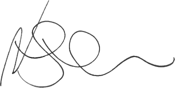

Guten Tag!
Mein Name ist Nils Lindemann, ich bin 46 Jahre alt. Seit Februar 2024 mache ich eine zweijährige Umschulung zum Fachinformatiker bei der WBS in Bremen. Teil dieser Umschulung ist ein sechsmonatiges Praktikum, für das ich mich hiermit bei Ihnen gerne bewerben möchte.
Das Praktikum geht vom 11. März bis 2. September 2025 und vom 10. Oktober bis 18. November 2025, 130 Werktage. Es ist für Sie unentgeltlich.
Ich suche einen Betrieb, der von der IHK zugelassen ist als Ausbilder für den Beruf Fachinformatiker Anwendungsentwicklung. Da ich mit dem Zug anfahre, suche ich ferner einen Betrieb in Osnabrück oder Bremen, oder eine Stadt mit einer ähnlich guten Anbindung an Diepholz.
Ich habe bisher im Verkauf gearbeitet, möchte aber etwas Neues ausprobieren.
Hobbymäßig habe ich langjährige Erfahrung in der Webprogrammierung und habe ein Nutzerkonto auf GitHub. Hier habe ich in verschiedenen Repositories gepullt, etwa beim Mint Webframework 1, 2, oder beim FastAPI Webframework 1, 2.
Ich würde mich freuen, wenn Sie mir die Gelegenheit geben, in das Arbeitsleben eines Entwicklers reinzuschnuppern.
Mit der Programmierung in Python und Javascript und mit Datenbankabfragen kenne ich mich gut aus. Bestehenden Code in anderen Sprachen wie etwa PHP oder Java kann ich gut bearbeiten.
Ferner kann ich Ihnen eine Hilfe sein beim Umsetzen von Designs nach Webseiten (Mobile First, Progressive Enhancement), beim Übersetzen vom oder ins Englische, oder beim Schreiben von Dokumentation.
Anhänge:
Bremen, November 2024
Letzte Änderung: 19. Dezember 2024

(Nils Lindemann)
{kind=link}